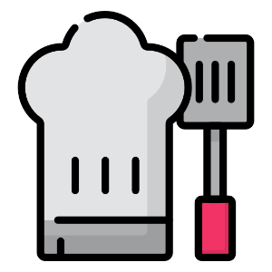

<nav class="navbar sticky-top navbar-expand-lg navbar-light" [ngClass]="{'small': isScrolled}">
    <a class="navbar-brand" href="">Resto<span>Search</span></a>
    <button class="navbar-toggler" type="button" data-toggle="collapse" data-target="#navbarSupportedContent"
            aria-controls="navbarSupportedContent" aria-expanded="false" aria-label="Toggle navigation">
        <span class="navbar-toggler-icon"></span>
    </button>

    <div class="collapse navbar-collapse" id="navbarSupportedContent">
        <ul class="navbar-nav mr-auto">
            <li class="nav-item">
                <a class="nav-link" routerLink="/search/">Search</a>
            </li>
        </ul>
    </div>
</nav>
